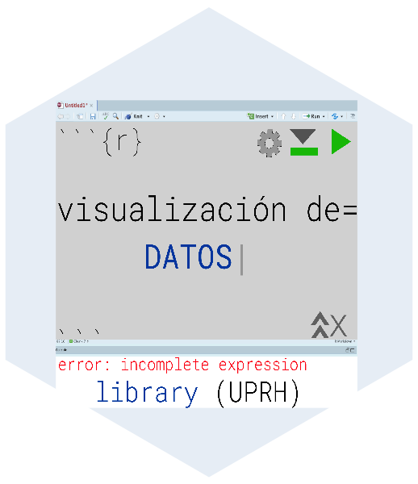

Capítulo 3 Poblacion y Muestreos
Fecha de la ultima revisión
## [1] "2026-08-01"

3.1 ¿Qué es la estadística?
Usando la definición de Snedecor y Cochran (1989) la estadística son las técnicas para la “recolección, análisis y la habilidad de tener una conclusión de los datos”.
También pudiésemos decir que la estadística es el estudio de la incertidumbre.
3.2 El concepto de población
Estos conceptos en estadística es sumamente diferente a la visión popular. En el concepto popular, social y geográfico una población es un conjunto de individuos de una especie o un concepto nacionalista (por ejemplos los Argentinos, o puertoriqueños). Típicamente se refiere a un grupo de individuos en un país, estado. El concepto de población en estadística es diferente en que se refiere a TODOS en el universo. Por consecuencia se fuésemos hacer un estudio de la población de puertoriqueños, tendríamos que incluir a todos ellos irrelevante de donde vive en el planeta. Por consecuencia el concepto de población en estadística siempre se refiere a todos los individuos sin que falte ni uno. Pudiésemos modificar nuestro estudio y decir que se va a estudiar una población más reducida. Por ejemplo la población de los puertoriqueños que viven en Puerto Rico en tal fecha. Aun así seria imposible recolectar datos de cada uno, porque siempre habrá algún individuo que no vamos a poder recolectar los datos. Por consecuencia el concepto de población es uno teórico.
3.3 El concepto de muestreo
Un muestreo es el subgrupo de la población, donde el objetivo es que este muestro sea representativo de la población. Por ejemplo uno hace una recolección de información para saber cual es el nivel de estrés durante la pandemia de COVID-19 que tuvo los estudiantes universitarios. Seria un trabajo fenomenal recolectar datos sobre TODOS los estudiantes, pero su podría recolectar información sobre un subgrupo de ellos con la espera que los datos represente la población de estudiantes universitarios.
3.4 Griego y Latin
Cuando uno quiere referir a la población/parámetro uno utiliza las letras del alfabeto griego y cuando nos referimos a un muestreo se usa la letra del alfabeto en latín.
En la siguiente tabla se observa algunos de las variables que veremos en los módulos siguientes. En los próximos módulos regresaremos al significado de estos parámetros.
library(gt)
library(knitr)
library(kableExtra)
df <- data.frame(variable = c("Promedio", "Mediana","Varianza", "Desviación Estandar", "Proporción"),
Griego = c("$$\\mu$$", "$$\\theta$$", "$$\\sigma_{ }^2$$","$$\\sigma$$", "$$p$$"),
Latin = c("$$\\bar{x}$$","$$M$$","$$s_{ }^2$$","$$s$$" ,"$$\\hat{p}$$"))
kable(df, escape=FALSE)| variable | Griego | Latin |
|---|---|---|
| Promedio | \[\mu\] | \[\bar{x}\] |
| Mediana | \[\theta\] | \[M\] |
| Varianza | \[\sigma_{ }^2\] | \[s_{ }^2\] |
| Desviación Estandar | \[\sigma\] | \[s\] |
| Proporción | \[p\] | \[\hat{p}\] |
3.5 La verdad versus un estimado
Cuando uno hace una investigación esta buscando la “verdad” en otra palabra estamos a la búsqueda de la información de la población. Desafortunadamente, raramente podemos tener TODA los datos, por consecuencia esperamos que la muestra sea una buena representación de la “verdad”. Se espera que el promedio de la muestra se acerca a promedio del universo (la verdad). Matemáticamente uno lo puede escribir de la siguiente manera \(\overline{x}\approx\mu\). El gran problema en la ciencia es que nunca estamos 100% seguro de los trabajos de investigación porque nunca sabemos el \(\mu\). Este valor es casi siempre desconocido.
3.6 Muestreos al azar
Una de las áreas de estudio importante es saber organizar un estudio para responder a unas preguntas y que no sea sesgado (en ingles “bias”). Cuando se selecciona los datos necesitamos asegurar que los datos sean representativos de la población de interés, el \(\mu\). Si por ejemplo queremos saber el nivel de colesterol en la población de puertoriqueños que viven en Puerto Rico el diseño del muestreo tiene que tomar en cuenta ese grupo y la muestra tiene que representar ese grupo.
Pregunta corta: Explica el sesgo de los diferentes métodos, como se podría mejorar el muestreo?
- ¿Cual de las siguientes alternativas es un mejor diseño experimental para deteminar el nivel de colestrerol de los puertoriqueños que viven en Puerto Rico?
- Se muestrea estudiantes de la clase de BioEstadística de la UPRH
- Se muestrea paciente que llegan a la oficina de un medico
- Se muestrea paciente que llegan a la sala de emergencia
- Se muestrea gente de multiples edades
- Se muestrea gente de multiples edades y distribuido por toda la isla